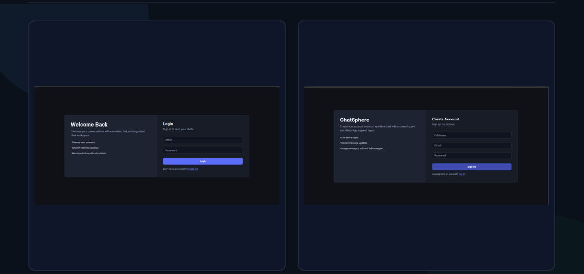
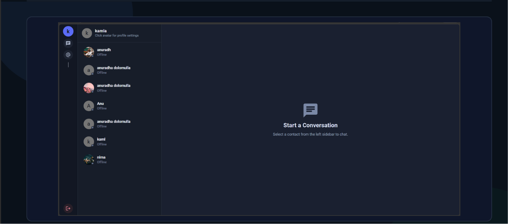
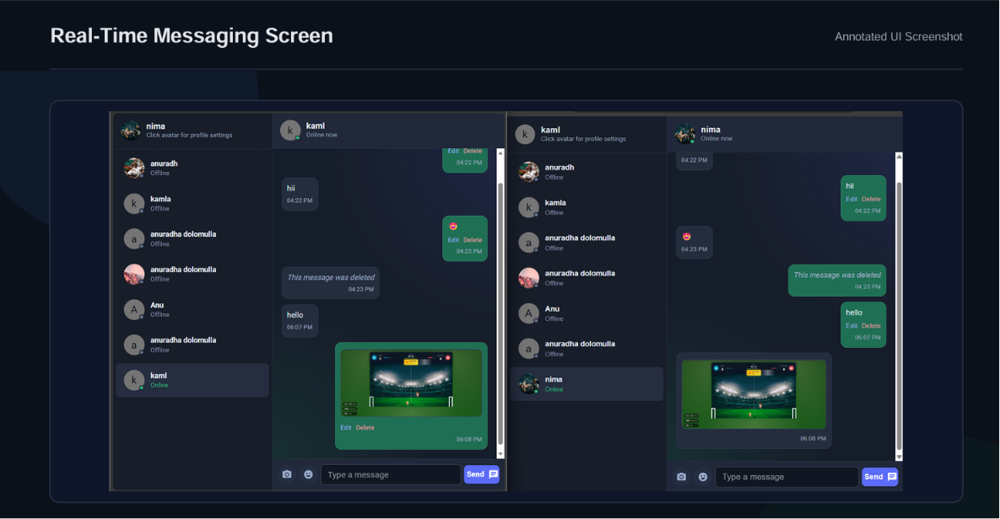
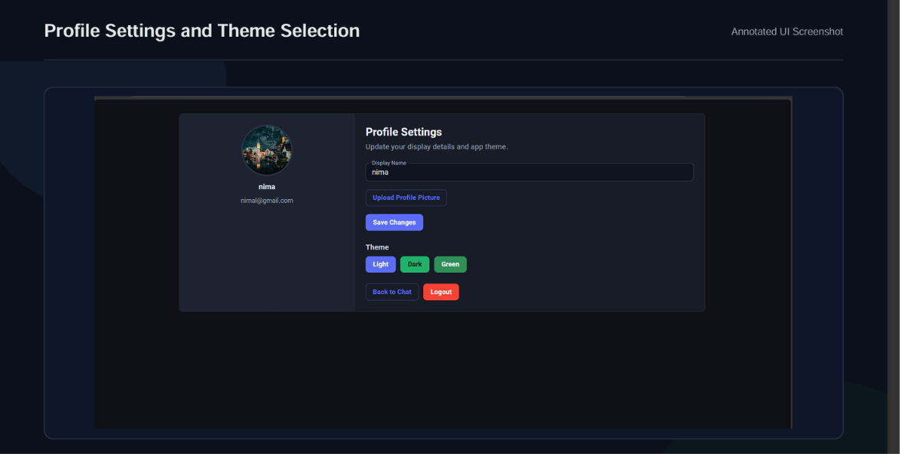

A full-stack chat project I built with MongoDB, Express.js, React, Node.js, JWT authentication, Socket.IO real-time updates, and Cloudinary image uploads.
I built ChatSphere as a practical MERN chat application, not just as a static UI. The project includes account creation, secure login, protected API routes, a real-time messaging dashboard, user presence, image support, editable messages, soft-deleted messages, and a profile settings page.
The backend is responsible for security, persistence, file upload integration, and socket events. The frontend is responsible for the user journey, API calls, socket connection, message state, profile updates, and the visual layout.
I used React with Vite because it keeps development fast and simple. Material UI handles the main interface components, layout, buttons, forms, avatars, badges, and theme setup. Axios is used through one shared HTTP client so all API calls use the same base URL and cookie settings.
I used Express.js with a clear route-controller-model structure. MongoDB stores users and messages through Mongoose models. JWT cookies protect private routes, bcryptjs hashes passwords, and Cloudinary stores uploaded images.
I kept the project split into backend, frontend, and documentation folders. This makes the repo easier to scan and avoids mixing server code, UI code, and project documents.
mern-chat-app-jwt-socketio/ |-- backend/ | |-- src/ | | |-- config/ | | |-- controllers/ | | |-- middleware/ | | |-- models/ | | |-- routes/ | | |-- utils/ | | `-- index.js | |-- .env.example | `-- package.json |-- frontend/ | `-- ui/ | |-- src/ | | |-- api/ | | |-- app/ | | |-- constants/ | | |-- pages/ | | `-- theme/ | |-- .env.example | `-- package.json |-- docs/ | |-- screenshots/ | |-- project-documentation.html | `-- project-documentation.pdf |-- .gitignore |-- package.json `-- README.md
The root package.json works like a small command center. It lets me run
backend and frontend commands from the main project folder while still keeping each
app's dependencies inside its own folder.
Signup validates the required fields, checks duplicate emails, hashes the password, saves the user, and creates a JWT cookie. Login compares the password with the stored hash and refreshes the cookie. Logout clears the cookie.
The auth middleware reads the JWT from the cookie, verifies it, loads the user from MongoDB, removes the password field, and attaches the user to the request before allowing private routes to continue.
Message APIs load conversation history, create messages, edit own messages, and soft-delete own messages. Soft delete keeps the conversation timeline stable while hiding the original text and image from the UI.
Profile image uploads use Multer memory storage and Cloudinary upload streams. Chat image messages are sent as Base64 from the client and then uploaded to Cloudinary before the message is saved.
The main chat experience combines REST APIs with Socket.IO. I used REST for the main write operations because it keeps validation, authentication, and database saving in the same backend flow. After the database change is complete, Socket.IO broadcasts the update to the sender and receiver.
getOnlineUsers keeps the sidebar online/offline state updated.newMessage appends new messages to the active conversation.messageUpdated replaces the edited message in the current UI state.messageDeleted marks a message as deleted without removing its record.
The backend also has a direct socket sendMessage handler. The current UI path
mainly uses the REST endpoint for sending messages, then relies on Socket.IO for the live
update. That gives the project a clean persistence-first flow.
The signup and login pages use controlled React form state, simple validation, API error handling, and navigation after successful requests. The interface uses a dark, focused layout instead of a plain default form.
The dashboard has a compact icon rail, user list, online badges, message panel, emoji picker, image picker, edit controls, delete controls, and a send box. It loads users and conversation history from the backend.
The profile page lets the user update display name, preview a selected image, upload the profile picture, choose a theme, return to chat, or logout.
I separated API calls into small files under src/api. The shared
Axios client uses withCredentials, so the JWT cookie is included
automatically when calling protected endpoints.




npm run install:all npm run dev:backend npm run dev:frontend
The backend runs on http://localhost:3000 by default. The Vite frontend
normally runs on http://localhost:5173. MongoDB and Cloudinary credentials
should be added to backend/.env using backend/.env.example
as the template.
This document is written to explain the project as an individual full-stack build, including the implementation decisions and the current feature set.